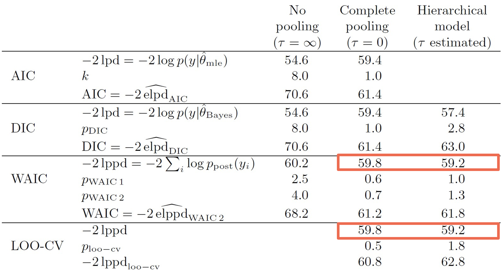

Model comparison
Model fitting, information criteria and posterior predictive checks
Let’s think back to the quote by George Box mentioned earlier in the course:
“Essentially, all the models are wrong, but some are useful.” - George E.P. Box (1976)
This is particularly relevant in cognitive modeling, where no model can perfectly capture human cognition. However, some models provide more useful approximations than others.
Consider our reinforcement learning example: we might have several competing hypotheses about how people learn from rewards. Perhaps some participants use a simple learning strategy with a single learning rate, while others might use different learning rates for positive and negative outcomes. Or maybe some individuals incorporate uncertainty into their learning process. Each of these hypotheses can be formalized as a different computational model, but which one best describes our participants’ behaviour?
Model comparison provides us with systematic tools to answer this question. Rather than simply accepting the first model that seems to fit our data reasonably well, we can fit multiple models and compare which is best. In relation to Box’s quote, we want to see which model is the least wrong!
Model fitting and the Goldilocks principle
Have a look at the graph below, which shows polynomials of different orders being fitted to some data, where \(M\) represents the order of the polynomial:
Looking at the model fits, which order-polynomial is ‘best’?
At first glance, you might think the \(M = 7\) model is ‘best’ since it passes exactly through each data point. However, this intuition leads us to the concept of overfitting - where a model learns to fit the noise in the specific data provided rather than explaining the underlying pattern more generally.
Overfitting can be humorously described by a John von Neumann quote recalled by Enrico Fermi:
“With four parameters I can fit an elephant, and with five I can make him wiggle his trunk.”
Elephants aside, his point was that with enough parameters, you can fit any pattern in your data - even if that pattern is just random noise.
This brings us to model-fitting, a fundamental concept in model selection illustrated in the figure below1:
Model fitting is an example of the Goldilocks principle: it needs to be just right
The graph shows that as we increase model complexity, we initially see improvements in how well our model fits the data. However, there comes a point where adding more complexity leads to overfitting.
The figure shows two crucial curves:
- The “Goodness of fit” curve shows how well the model fits the observed data, which continues to improve with complexity.
- The “Generalizability” curve shows how well the model performs on new, unseen data. This curve peaks and then declines as the model becomes too complex.
Looking back at our polynomial example, while \(M = 7\) undoubedtly gives us the best fit to our observed data points, it would likely perform poorly if we tried to use it to predict new data. The model has accurately but specifically learned the noise in our sample rather than the more general relationship we’re trying to understand.
Ultimately, we need to find a sweet spot - a balance between underfitting and overfitting.
But how do we determine which model is best? A more philosophical rule follows Ockham’s razor, which (in one variation) states that:
“When having two competing theories that make exactly the same predictions, the simpler one is the better.” - original maxim attributed to William of Ockham (c. 1285 - 1347)
Specifically concerning model selection, we should therefore prefer simpler models when they provide similar explanatory power or make fewer assumptions; \(M = 2\) or \(M = 4\) might provide the best balance - capturing the main trend in the data without overfitting.
Information criteria
As a result, we would like to know which model best fits the data but also generalizes to new unobserved data.
But how do we define and implement this objectively? One way is through cross-validation.
Cross-validation (\(k\)-fold) involves fitting a model to most of the data and testing it on the remainder \(k\) times
The basic principle is straightforward: we divide our dataset into two parts:
1. A training set that we use to fit our model
2. A validation set that we use to test how well our model predicts new, unseen data
The figure above shows a specific type: \(k\)-fold cross-validation, where the data is divided into \(k\) equal sections, and each section takes a turn being the validation set while the remaining sections form the training set.
Leave-One-Out Cross Validation (LOOCV) is a special case of \(k\)-fold cross-validation where \(k\) equals the number of data points in the dataset, meaning you leave out just one data point for validation while training on all others, repeating for every point in the dataset. While LOOCV provides nearly unbiased estimates of model performance, it can be computationally expensive for large datasets since you need to train the model \(n\) times (where \(n\) is your sample size), compared to \(k\)-fold which only requires training \(k\) times.
Cross-validation is particularly useful when we have a fixed amount of data and won’t be collecting more. Rather than using all our data to fit the model, we deliberately hold some back to simulate how well our model might perform on future observations. This helps us detect overfitting - if a model performs much better on the training data than the validation data, it’s likely overfitting.
However, cross-validation comes with some practical limitations. We need to perform this process for each model we want to compare, which can be computationally intensive. For complex models or large datasets, this can make cross-validation quite time-consuming.
In the Bayesian context, there’s an interesting alternative approach. While nothing prevents us from using cross-validation with Bayesian models, holding out data makes our posterior distributions more diffuse, since we’re using less information to estimate our parameters. Instead, Bayesians typically condition on all available data and use “information criteria” to evaluate how well a model is expected to predict out of sample. While cross-validation directly tests this by holding out data, information criteria provide mathematical approximations to cross-validation that are computationally more efficient.
Information criteria are mathematical formulas that balance two components:
How well the model fits the observed data (goodness of fit)
A penalty term for model complexity (to prevent overfitting)
Commonly used information criteria are:
The original information criterion, introduced by Hirotugu Akaike, is calculated as:
\[AIC = -2(\log\mathcal{L}) + 2k\]
where:
\(\mathcal{L}\) is the maximum likelihood , and \(k\) is the number of parameters in the model.
DIC was developed specifically for Bayesian models, extending AIC to handle hierarchical models:
\[DIC = -2(\log\mathcal{L}) + 2p_D\]
where:
\(p_D\) is the effective number of parameters, accounting for how parameters might be constrained by the hierarchical structure.
WAIC is currently considered the most accurate approximation to leave-one-out (LOO) cross-validation. It computes the predictive accuracy for each data point and includes a correction for effective number of parameters:
\[WAIC = -2(lpd - p_{WAIC})\]
where:
\(lpd\) is the log pointwise predictive density, and \(p_{WAIC}\) accounts for model complexity, determined by:
\[lpd = \sum_{i=1}^n \log \left(\frac{1}{S}\sum_{s=1}^S p(y_i|\theta^s)\right)\]
\[p_{WAIC} = \sum_{i=1}^n V_{s=1}^S(\log p(y_i|\theta^s))\]
where:
\(S\) is the number of posterior samples,
\(\theta^s\) are the parameter values in sample \(s\),
and \(V\) represents the sample variance over the \(S\) samples.
We will be using the WAIC for model comparison in this course, as it provides the best approximation to leave-one-out cross-validation. Unlike AIC and DIC, WAIC uses the full posterior distribution rather than just point estimates, making it more appropriate for Bayesian models.
We can see this in the table below, which compares the accuracy of different information criteria to the leave-one-out cross-validation (LOO-CV) ground truth2. As highlighted, the WAIC performs best relative to the AIC and DIC.

WAIC outperforms AIC and DIC when approximating LOOCV
How is the WAIC calculated? Remember that the likelihood tells us how probable our observed data is under a particular model, with higher likelihood values suggesting the model does a better job of explaining the observed data. However, simply choosing the model with the highest likelihood can be misleading as this would always favour more complex models.
WAIC estimates how well our model would predict new data (out-of-sample prediction) by:
Using the likelihood to measure how well the model fits each individual data point
Accounting for uncertainty in our parameter estimates by averaging across many possible parameter values (our posterior samples)
Penalizing models that make very different predictions when parameters change slightly (a sign of overfitting)
The resulting WAIC score is on the deviance scale - lower values indicate better predictive models. For example, if Model A has a WAIC of 500 and Model B has a WAIC of 600, Model A is predicted to do better at generalizing to new data. When comparing models however, we typically look at WAIC differences.
Note that while another type, Bayesian Information Criterion (BIC) is also commonly used, it has a different goal: finding the “true” model under specific assumptions about the data-generating process. Since in cognitive modeling we typically assume all models are approximations, WAIC’s focus on predictive accuracy is more appropriate for our purpose.
Model comparison using WAIC
Let’s now apply the WAIC practically in Stan to compare model performance across multiple reinforcement learning models.
We have already utilized several blocks beyond the basic data, parameters, and model blocks in Stan:
transformed datafor pre-processing data before sampling begins.transformed parametersfor implementing parameter transformations, including reparameterization.
When calculating the log-likelihood, we use another optional block - generated quantities for post-processing our posterior samples after the main sampling is complete. It’s ideal for computing quantities we need for model comparison (like log-likelihoods) or predictions.
So, building from our existing reparameterized hierarchical RL model from the last workshop, we simply add a generated quantities block, where we calculate log-likelihoods for each subject:
generated quantities {
real<lower=0,upper=1> lr_mu;
real<lower=0,upper=3> tau_mu;
real log_lik[nSubjects];
lr_mu = Phi_approx(lr_mu_raw);
tau_mu = Phi_approx(tau_mu_raw) * 3;
{ // local section, this saves time and space
for (s in 1:nSubjects) {
vector[2] v;
real pe;
log_lik[s] = 0;
v = initV;
for (t in 1:nTrials) {
log_lik[s] = log_lik[s] + categorical_logit_lpmf(choice[s,t] | tau[s] * v);
pe = reward[s,t] - v[choice[s,t]];
v[choice[s,t]] = v[choice[s,t]] + lr[s] * pe;
}
}
}
}In this block, we declare log-likelihoods for each subject:
real log_lik[nSubjects]; // Declare log-likelihood arrayinitialize their log-likelihood to zero:
log_lik[s] = 0;and loop through trials, accumulating log-likelihood:
log_lik[s] = log_lik[s] + categorical_logit_lpmf(choice[s,t] | tau[s] * v);This line above is important and calculates how likely (the log-probability) it was that the participant made the choice they actually made, according to our model.
Let’s break this line down further:
Recall that our data (choice[s,t]) is discrete - participants choose either option 1 or 2. We therefore can’t use continuous distributions like normal for discrete data. Instead, we use the categorical distribution, which gives probabilities for discrete outcomes.
Specifically we use the
categorical_logit_lpmf(categorical log probability mass function) because we’re working with discrete data and log-odds.The vertical bar
|inchoice[s,t] | tau[s] * vrepresents Bayesian conditioning. It reads as “the probability of observingchoice[s,t]giventau[s] * v”. This directly reflects the Bayesian relationship between our data, parameters and our model’s predictions.
So to summarise:
Our model predicts values for each option (stored in
v)Based on these values and the participant’s inverse temperature (
tau[s]), we can calculate how likely they were to choose each optionWe then look at what they actually chose (
choice[s,t])The function calculates the log probability that they would make that specific choice
We then add this log probability to a running total (
log_lik[s]) for that participant. By doing this for every trial, we get a measure of how well our model predicted that participant’s entire sequence of choices.
Once we have the log likelihoods, we can then calculate model comparison metrics using the loo package in R3:
This is rather simple and firstly involves extracting the log-likelihood matrix from our Stan fit object:
LL1 <- extract_log_lik(stanfit)Then we can simple compute either the WAIC or LOO-CV (Leave-One-Out Cross-Validation) by Pareto Smoothed Importance Sampling (PSIS):
waic1 <- waic(LL1) # WAIC calculation
loo1 <- loo(LL1) # PSIS-LOO calculationWAIC and PSIS-LOO are both methods for estimating out-of-sample prediction accuracy, but they approach it differently. WAIC approximates leave-one-out cross-validation using the entire dataset, while PSIS-LOO uses importance sampling to approximate true leave-one-out cross-validation. In practice, they often give very similar results, and both are valid choices for model comparison.
The (hypothetical) output below shows us several key metrics computed from the loo package, in the case below as a 4000 x 20 log-likelihood matrix (representing 4000 posterior samples for 20 subjects):
Computed from 4000 by 20 log-likelihood matrix
Estimate SE
elpd_loo -29.5 3.3
p_loo 2.7 1.0
looic 58.9 6.7Where:
elpd: expected log predictive density (how well a model is expected to predict new, unseen data)p_loo/p_waic: effective number of parameterslooic/waic: information criterion value
What we are most interested in is the looic estimate, which in this case is 58.9. Remember that lower values mean a better model!
Introducing the Fictitious RL model
Now that we know what to expect, let’s run our model comparison. However for this exercise, we will use a different dataset to what we have used prior.
So far, we’ve worked with reinforcement learning tasks where reward probabilities remained constant. However, in real life, reward contingencies often change - what was once rewarding might become unfavorable, and vice versa. The reversal learning task4 captures this dynamic nature of learning.
An example reversal learning reward contingency, with reversals every 8-12 trials
In a conventional reversal learning task, participants choose between two stimuli, where initially, one stimulus might have a higher reward probability (say 70%) while the other has a lower probability (30%). However, after a certain number of trials, these probabilities switch or “reverse” - the previously better option becomes the worse option and vice versa. This creates a more challenging learning environment where participants must detect and adapt to these changes. The block length, or the number of trials between each reversal, is also variable; in the example above it is constrained to occur between every 8-12 trials.
Of course, to perform model comparison, we need more than one model! We already have our standard Rescorla-Wagner (RW) model that we’ve used before, so now we will compare it with a variant - the Fictitious (or Counterfactual) RL model.
Recall that the standard RW model updates only the value of the chosen option based on the received reward:
\[V_{t+1}^c = V_t^c + \alpha \cdot PE\]
with the prediction error \(PE\) defined as:
\[PE = R_t - V_t^c\]
where:
\(V_t^c\) is the value of the chosen option,
\(\alpha\) is the learning rate.
The Fictitious RL model extends the basic Rescorla-Wagner by also updating the value of the unchosen option. The key insight is that in binary choice tasks with complementary rewards (like our reversal learning task), not receiving a reward on one option provides information about what might have happened had we chosen the other option.
The model captures this through these equations:
\[V_{t+1}^c = V_t^c + \alpha \cdot PE\] and simultaneously:
\[V_{t+1}^{nc} = V_t^{nc} + \alpha \cdot PE_{nc}\]
where:
\[PE = R_t - V_t^c\] and:
\[PE_{nc} = -R_t - V_t^{nc}\]
The crucial difference are in the second and fourth equations: the model updates the value of the non-chosen option (\(V_t^{nc}\)) using a counterfactual prediction error (\(PE_{nc}\)).
The negative sign before \(R_t\) in \(PE_{nc}\) in the last equation reflects the complementary nature of the rewards - if one option gives a reward, the other option would have given no reward, and vice versa. This counterfactual learning might be particularly useful in reversal learning tasks, as it allows participants to learn about both options on every trial, potentially enabling faster adaptation to reversals.
To better understand the difference between the two models, the graphs below plot the value update calculated by both models with the learning rate (\(η = 0.35\)) and inverse temperature (\(τ = 1.2\)) parameters fixed to be the same for both:
Value and choice predicted by the Fictitious and Rescorla-Wagner (Simple) RL models with fixed learning rates and inverse temperatures
The crucial difference between the models is visible in how the unchosen option’s value changes. In the Simple RL model, the unchosen option’s value remains flat/unchanged until it is chosen again. This creates “plateaus” in the value lines when an option isn’t chosen, for example in the orange line around trials 20-30, where it remains completely flat while option A is being chosen.
Conversely, for the Fictitious RL model, where both options’ values are updated on every trial, no flat plateaus are visible. Subsequently, the value difference between the options for both models, highlights how this is - on average, across all trials - larger for the Fictitious RL model compared to the Simple RL model. As a result, because larger value differences could translate into an easier choice between the two options, the Fictitious RL represents a potential cognitive process that people use.
Now that we have two models, we can compare them directly using the WAIC, and test whether participants actually use this additional information when making decisions in the reversal learning task.
The Stan implementation of the Fictitious RL can be found in _scripts/comparing_models_model2.stan. Comparing this to the Simple RL comparing_models_model1.stan, we can’t see much of a difference. In fact, the only major difference is in the model block.
In the Simple RL, we have a simple update rule that only modifies the value of the chosen option:
pe = reward[s,t] - v[choice[s,t]];
v[choice[s,t]] = v[choice[s,t]] + lr[s] * pe;This shows that on each trial, the model:
Calculates a prediction error (
pe) for the chosen optionUpdates only the value of the chosen option using this prediction error
The second model extends this by also updating the unchosen option’s value:
pe = reward[s,t] - v[choice[s,t]];
penc = -reward[s,t] - v[3 - choice[s,t]];
v[choice[s,t]] = v[choice[s,t]] + lr[s] * pe;
v[3 - choice[s,t]] = v[3 - choice[s,t]] + lr[s] * penc;After declaring a new variable penc for the counterfactual prediction error real penc;:
We use
3 - choice[s,t]to index the unchosen option (since if choice is 1, we want 2, and if choice is 2, we want 1)We calculate
pencusing the negative of the reward (-reward[s,t])We update both the chosen and unchosen options’ values on each trial
1. Run both models using the R script compare_models_main.R, and examine the LOOIC values for each. Which is best?
The results should look (roughly5) like this:
> LL1 <- extract_log_lik(fit_rl1)
> ( loo1 <- loo(LL1) )
Computed from 4000 by 10 log-likelihood matrix
Estimate SE
elpd_loo -389.4 15.4
p_loo 3.5 0.7
looic 778.7 30.8
> ( loo2 <- loo(LL2) )
Computed from 4000 by 10 log-likelihood matrix
Estimate SE
elpd_loo -281.6 17.5
p_loo 3.8 0.5
looic 563.2 35.1The lower LOOIC value for the second model (Fictitious RL) (~563 vs ~779) suggests it provides a better fit to the data than the Rescorla-Wagner model.
Posterior predictive checks
We have just compared our two RL models objectively using information criteria, suggesting that the Fictitious RL model will better predict new, unseen data from our reversal learning task and more accurately captures the underlying latent cognitive processes that generated the observed data. But while measurements like WAIC and LOO help us compare models quantitatively, posterior predictive checks allow us to visually assess how well our models actually capture patterns in the observed data.
The basic idea of posterior predictive checks is simple: we ask our model to generate simulated data. If our model is good, data simulated from it should look similar to our actual data. Not only does running posterior predictive checks allow us to validate good fitting models, it also can be used to falsify bad fitting ones.
To perform posterior predictive checks, we need to add a section to our Stan models that generates simulated data. We do this in the generated quantities block.
Importantly, because we are using a Bayesian approach, we don’t just simulate from the mean parameter estimates - instead, we simulate new data using every posterior sample of our parameters. This is crucial because it allows us to incorporate our uncertainty about the parameters into our predictions.
From our Stan model, we get posterior samples for all parameters - in our case, 4000 draws from the posterior distribution of each parameter (learning rates, inverse temperatures, etc.). For each of these 4000 parameter sets, we then simulate an entire experiment worth of data using those specific parameters. This is what’s happening in the corresponding generated quantities block:
generated quantities {
// ... existing code for log likelihood ...
// Generate predicted choices
array[nSubjects, nTrials] int y_pred;
{ // local section
for (s in 1:nSubjects) {
vector[2] v;
real pe;
v = initV;
for (t in 1:nTrials) {
// Generate predicted choice from current values
y_pred[s,t] = categorical_logit_rng(tau[s] * v);
// Update values using actual reward
pe = reward[s,t] - v[choice[s,t]];
v[choice[s,t]] = v[choice[s,t]] + lr[s] * pe;
}
}
}
}This generates 4000 different simulated datasets. Subsequently, we need to then compare the accuracy of these datasets using R.
1. Plot the posterior predictive checks for both models (Simple and Fictitious RL) using the R script comparing_models_ppc.R and examine the output.
You should generate the two plots below:
Posterior predictive checks for both models: trial-by-trial choice accuracy (left) and distribution of overall accuracy (right)
For the time course plot on the left, for each trial, we take all 4000 simulated experiments and calculate the proportion of correct choices at that trial across all subjects.
For the distribution plot on the right, for each of the 4000 simulated experiments, we calculate the overall proportion of correct choices across all trials and subjects. The histograms show the distribution of these 4000 overall proportions, whilst the vertical line shows the actual overall proportion from the real data.
Again, you can see that the straight blue line is closer to the peak for the Fictitious RL compared to the simple RL, demonstrating that this model better captures the true choice behaviour patterns in the data.
Footnotes
Pitt, M. A., & Myung, I. J. (2002). When a good fit can be bad. Trends in cognitive sciences, 6(10), 421-425.↩︎
Gelman, A., Hwang, J., & Vehtari, A. (2014). Understanding predictive information criteria for Bayesian models. Statistics and computing, 24, 997-1016.↩︎
Vehtari, A., Gabry, J., Magnusson, M., Yao, Y., Bürkner, P., Paananen, T., & Gelman, A. (2024). loo: Efficient leave-one-out cross-validation and WAIC for Bayesian models (Version 2.8.0) [R package]. Retrieved from https://mc-stan.org/loo/↩︎
Zhang, L., & Gläscher, J. (2020). A brain network supporting social influences in human decision-making. Science advances, 6(34), eabb4159.↩︎
Even though the Stan model code in
Ruses the same seed, differences in hardware across computers will produce slightly different end results.↩︎